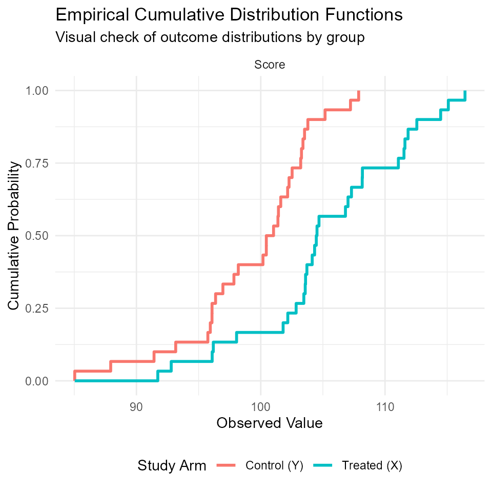
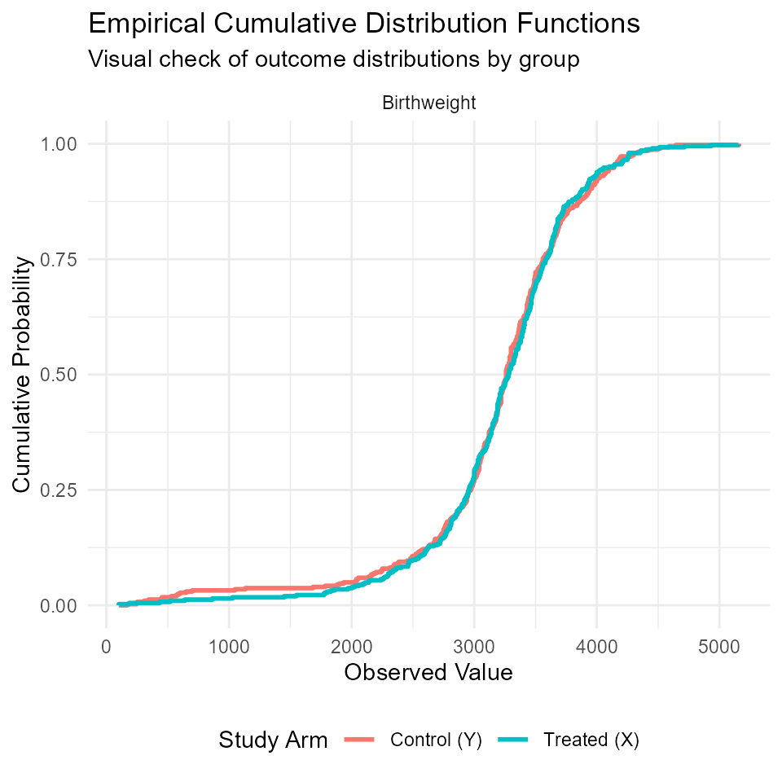
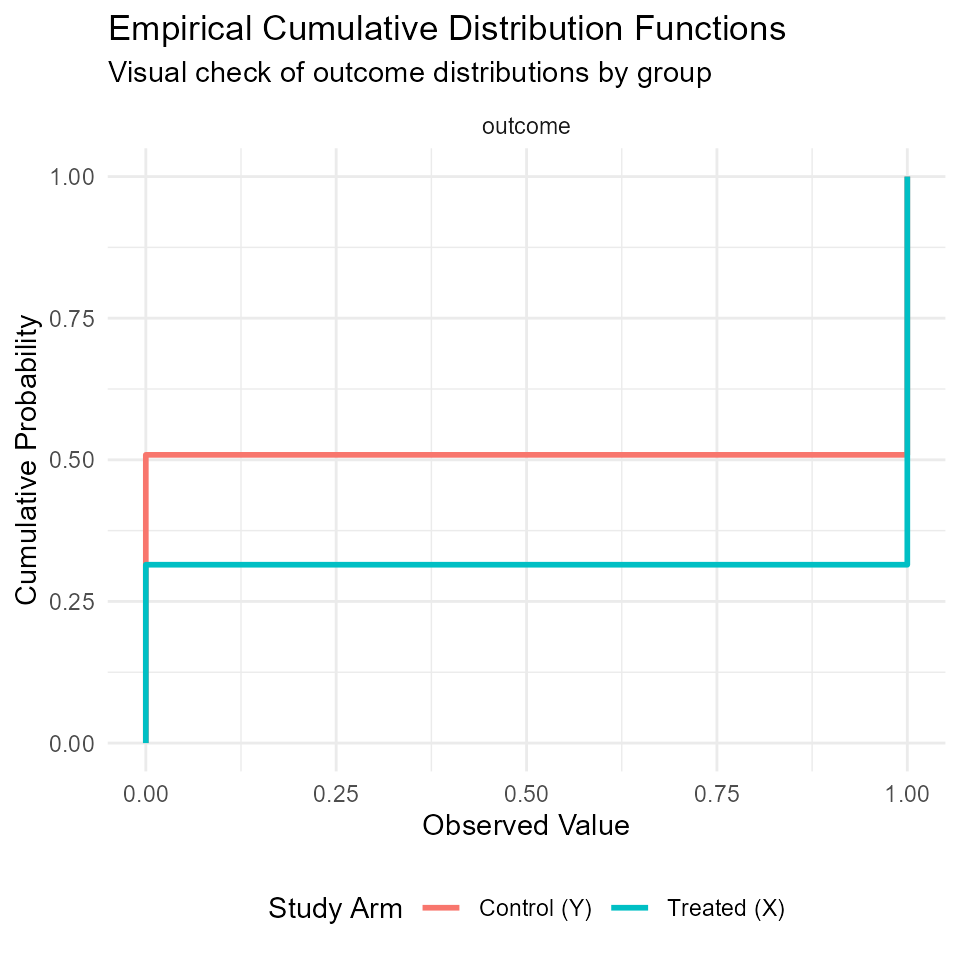
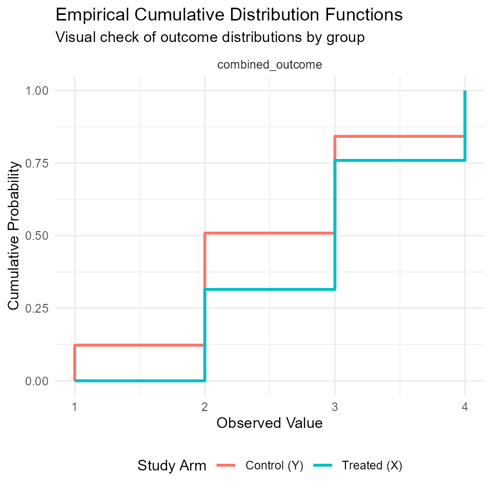
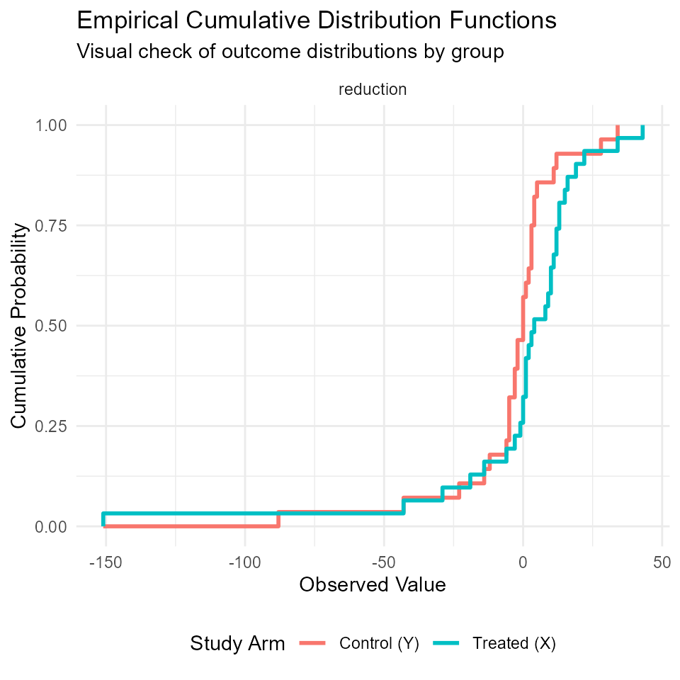
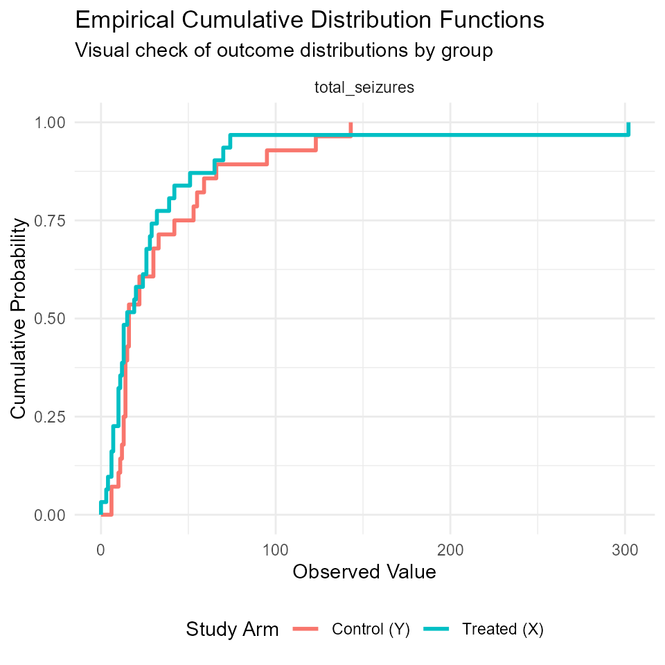
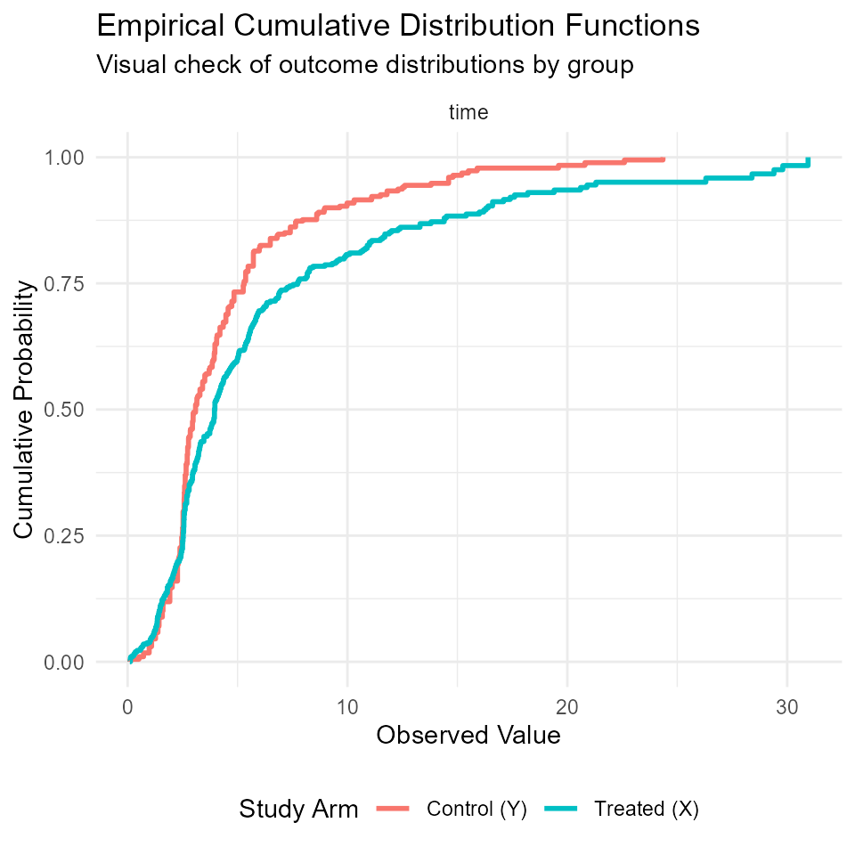

infuse_start_guide.Rmd#> Loading required package: Rcpp
#> Warning in .recacheSubclasses(def@className, def, env): undefined subclass
#> "ndiMatrix" of class "replValueSp"; definition not updated
#> BuyseTest version 3.3.4
#> ── Attaching core tidyverse packages ──────────────────────── tidyverse 2.0.0 ──
#> ✔ dplyr 1.2.0 ✔ readr 2.2.0
#> ✔ forcats 1.0.1 ✔ stringr 1.6.0
#> ✔ ggplot2 4.0.2 ✔ tibble 3.3.1
#> ✔ lubridate 1.9.5 ✔ tidyr 1.3.2
#> ✔ purrr 1.2.1
#> ── Conflicts ────────────────────────────────────────── tidyverse_conflicts() ──
#> ✖ dplyr::filter() masks stats::filter()
#> ✖ dplyr::group_rows() masks kableExtra::group_rows()
#> ✖ dplyr::lag() masks stats::lag()
#> ℹ Use the conflicted package (<http://conflicted.r-lib.org/>) to force all conflicts to become errorsSuppose we have a Randomized Clinical Trial (RCT) with two groups (T= Treated and C= Controls). We use to refer to the outcome in the Treated group and to the outcome in the Control group. Without loss of generality, we assume higher values indicate a better outcome.
The experiment consists of selecting a random pair . These pairs are classified based on a clinically relevant difference, :
The objective is to estimate the Net Treatment Benefit (NTB):
To estimate and , we use a plug-in estimator. Rather than comparing every possible pair (which is computationally expensive), we leverage the Empirical Survival Functions and :
This approach is mathematically equivalent to Generalized Pairwise Comparisons (GPC) but significantly faster because it reduces the problem to a sequence of lookups on a step function.
The infuse package operates on a simple, three-stage
lifecycle.
sow(): Setting the Foundation
The sow() function is your initialization tool. It
prepares the environment, partitioning data into treatment/control
groups, and pre-calculating Empirical Cumulative Distribution Functions
(ECDF). It produces a structured S3 object optimized for the harvest
function.
harvest(): The Gathering Phase
Once the seeds are sown, harvest() does the heavy lifting. It executes the core logic of the package. In essence it calculates the point estimates and the patient-level values of the influence functions. This function passes weighted ECDF data to the C++ inference engine to calculate point estimates and influence functions for Favorable and Unfavorable pairs, Net Treatment Benefit, Win Ratios and the Generalised Number Needed to Treat.
reap(): Extracting the Essence
The reap() function is the final step. It takes the raw output from the harvest() phase and “strains” it into a clean, usable format (like a tidy data frame or a summary list). It calculates point estimates, standard errors, confidence intervals, and p-values for NTB and WR statistics using Influence Functions. It supports both individual outcome analysis and a weighted Non-Prioritized Outcome (NPO) summary.
In this example, we compare a “Score” (like a wellness index) between a Treated and Control group. We want to determine if a random Treated individual has a “Favorable” outcome compared to a random Control individual, defined by a minimum difference of 3 points.
First, let’s create a small dataset of 20 participants.
library(infuse)
library(tidyverse)
library(kableExtra)
set.seed(42)
dat <- data.frame(
Group = c(rep("Treated", 30), rep("Controls", 30)),
Score = c(rnorm(30, 105, 5), rnorm(30, 100, 5))
)
dat %>% slice_sample(n=10) %>% kbl() %>% kable_paper()| Group | Score |
|---|---|
| Treated | 92.79767 |
| Controls | 103.52419 |
| Treated | 108.17975 |
| Controls | 103.21450 |
| Treated | 107.30049 |
| Treated | 103.57874 |
| Controls | 96.36648 |
| Treated | 115.09212 |
| Treated | 103.46681 |
| Controls | 103.79082 |
Step 1 sow(): The preparation
The sow() function initializes the analysis. It identifies the treatment arm and pre-calculates the distribution of the data.
# We specify that a "high" score is clinically better
s <- sow(Score ~ Group, data = dat, treated = "Treated", good = "high")The formula object Score ~ Group supports multiple
outcomes on the LHS and exactly one binary grouping variable on
the RHS.
The treated argument is a string specifying the
level of the grouping variable to be treated as the “Treated” (Group X)
arm. Defaults to “Treated”.
Finally, the good argument is a character vector
(“high” or “low”) indicating clinical favorability. If
good = "high" high values of the outcome represent better
clinical response.
the object s is a structured S3 object of class
sow, a nested list containing:
xid, yid: Participant IDs for Treated
(X) and Control (Y) groups.
Variables: A named list for each outcome containing
pre-calculated ECDFs, weights, and GPD tail parameters if
applicable.
We can plot the cumulative distribution functions of the Treated (X)
and the Controls (Y) using the plot method:
plot(s)
The summary method:
summary(s)
#>
#> Statistical Summary of Sown Data
#> ========================================
#> Outcome Type Direction Mean_X Mean_Y N_Event_X N_Event_Y
#> Score numeric high 105.343 99.39 30 30
#> ========================================gives high level summaries. In this case we have one variable Score that is numeric with high values representing better outcomes and a mean of the treated of 105 vs a mean of the controls of 99 indicating an effect in favour of the Treated.
Step 2: harvest() (The Calculation)
Now we calculate the probability that a random Treated-Control pair
is Favorable. We define lambda = 3, meaning a treated
patient only “wins” against a control patient if their score is at least
3 points higher.
# The harvest function runs the influence-function engine
h <- harvest(s, lambda = 3)
summary(h)
#>
#> Detailed Harvest Summary (Point Estimates)
#> ---------------------------------------------
#> f u n log(w) Variable
#> 0.63778 0.13556 0.50222 1.54861 Score
#> ---------------------------------------------
#> Sample Size: 30 Treated (X), 30 Control (Y)In this example the probability of a favorable (f) pair is 0.64 while the probability of an unfavorable (u) pair is 0.14.
The Net Treatment Benefit (n) is the difference 0.64 - 0.14 = 0.50.
The Win Ratio (w) is the ratio: 0.64/0.14=4.6 (which is 1.55 on the log-scale).
The plot() method helps identify observations that are
potentially influential in the estimation:
plot(h,metric="ntb",type = "influence")Note: The diamonds represent the mean values of the influence functions, which are expected to be 0 for a correctly specified estimator.
Step 3: reap() (The Results)
Finally, we “reap” the statistical inference. This converts the raw influence values into a tidy table with point estimates, confidence intervals, and p-values.
r <- reap(h)
r %>%
kbl(caption = "Net Benefit Analysis (Threshold = 3)") %>%
kable_styling(bootstrap_options = "striped")| Variable | Metric | Estimate | Se | Lower | Upper | PValue |
|---|---|---|---|---|---|---|
| Score | Favorable | 0.6377778 | 0.0719648 | 0.4967294 | 0.7788262 | <0.001 |
| Score | Unfavorable | 0.1355556 | 0.0503780 | 0.0368165 | 0.2342946 | 0.007 |
| Score | NetT Benefit | 0.5022222 | 0.1159807 | 0.2749042 | 0.7295402 | <0.001 |
| Score | Win Ratio | 4.7049180 | 0.4660265 | 1.8874245 | 11.7282856 | <0.001 |
| Score | NNT | 2.0000000 | 0.1159807 | 2.0000000 | 4.0000000 | <0.001 |
Both the NTB and the WR ratio are statistically significant (p<0.05).
Interpretation:
NTB (0.50): in a set of 100 random treated-control pairs, we expect a net surplus of 50 favorable pairs over unfavorable pairs (concretely you expect 64 favorable pairs and 14 unfavorable pairs)
WR (4.7): A random treated-control pair is 4.7 times more likely to have a favorable pair than an unfavorable one.
GNNT (2): We expect to observe one extra favorable pair for every 2 random treated-control pairs.
All in all, this analysis demonstrates that the treatment results in a significant and clinically meaningful benefit for the participants.
We compare the results with those obtained using Generalised Pairwise Comparisons:
helper_buyse <- function(BT) {
o1 <- confint(BT,statistic = "favorable") %>% mutate(Metric="Favorable")
o2 <- confint(BT,statistic = "unfavorable") %>% mutate(Metric="Unfavorable")
o3 <- confint(BT) %>% mutate(Metric="NetT Benefit")
o4 <- confint(BT,statistic = "winRatio") %>% mutate(Metric="Win Ratio")
o <- rbind(o1[dim(o1)[1],],o2[dim(o2)[1],],o3[dim(o3)[1],],o4[dim(o4)[1],])
row.names(o) <- NULL
o <- o %>% select(Metric,Estimate = estimate,Lower = lower.ci,Upper = upper.ci)
o
}
BT <- BuyseTest(data = dat,endpoint = "Score",type = "cont",treatment = "Group",threshold = 3,trace=0)
helper_buyse(BT) %>%kbl() %>% kable_paper("hover", full_width = FALSE)| Metric | Estimate | Lower | Upper |
|---|---|---|---|
| Favorable | 0.6377778 | 0.4887965 | 0.7642793 |
| Unfavorable | 0.1355556 | 0.0632494 | 0.2669642 |
| NetT Benefit | 0.5022222 | 0.2433013 | 0.6943293 |
| Win Ratio | 4.7049180 | 1.8874245 | 11.7282856 |
We are ready now to see a few real life examples.
This study investigated whether treating maternal periodontal disease reduces the risk of preterm birth and low birth weight. Periodontal disease is an inflammatory condition that may impact fetal health through the systemic release of cytokines.
In this randomized trial:
Treatment (T): Received periodontal treatment and oral hygiene instruction.
Control (C): Received brief oral exams only.
Outcome: Birth weight of the baby (grams).
data(obstetrics)
dat <- obstetrics
# Display sample data
kbl(head(dat)) %>%
kable_paper(bootstrap_options = "striped", full_width = FALSE)| Pid | Clinic | Group | Age | PretermYN | Birthweight |
|---|---|---|---|---|---|
| 100034 | NY | C | 25 | No | 3490 |
| 100042 | NY | C | 21 | Yes | 2350 |
| 100067 | NY | T | 25 | No | 2525 |
| 100083 | NY | C | 36 | No | 3650 |
| 100091 | NY | C | 21 | No | 3865 |
| 100109 | NY | T | 40 | No | 3120 |
We define a clinically relevant difference of λ=500 grams. Any pair where the treated mother’s baby is at least 500g heavier than the control is considered “Favorable.”
The plot of the Empirical CDFs allows us to see the “gap” between the two groups across the entire weight spectrum (which in this case is very small):

summary(s)
#>
#> Statistical Summary of Sown Data
#> ========================================
#> Outcome Type Direction Mean_X Mean_Y N_Event_X N_Event_Y
#> Birthweight integer high 3216.67 3180.824 406 403
#> ========================================Using our threshold, we estimate the relevant probabilities:
h <- harvest(s,500)
r <- reap(h)
r %>%
kbl(caption = "Net Benefit Analysis (Threshold = 500)") %>%
kable_styling(bootstrap_options = "striped")| Variable | Metric | Estimate | Se | Lower | Upper | PValue |
|---|---|---|---|---|---|---|
| Birthweight | Favorable | 0.2511032 | 0.0175060 | 0.2167920 | 0.2854144 | <0.001 |
| Birthweight | Unfavorable | 0.2456820 | 0.0172145 | 0.2119422 | 0.2794218 | <0.001 |
| Birthweight | NetT Benefit | 0.0054212 | 0.0315146 | -0.0563464 | 0.0671887 | 0.863 |
| Birthweight | Win Ratio | 1.0220658 | 0.1268768 | 0.7970418 | 1.3106194 | 0.863 |
| Birthweight | NNT | 185.0000000 | 0.0315146 | 15.0000000 | -17.0000000 | 0.863 |
infuse vs. BuyseTest
To validate the infuse engine, we compare our point
estimates with the established BuyseTest package.
Initially, a direct comparison might show slight differences if the
dataset contains missing values (NA). BuyseTest and
infuse handle missingness differently by default. However,
when we ensure a clean dataset, the results match perfectly:
BT <- BuyseTest(data = dat %>% na.omit(),endpoint = "Birthweight",type = "cont",treatment = "Group",threshold = 500,trace=0)
helper_buyse(BT) %>%kbl() %>% kable_paper("hover", full_width = FALSE)| Metric | Estimate | Lower | Upper |
|---|---|---|---|
| Favorable | 0.2511032 | 0.2183693 | 0.2869426 |
| Unfavorable | 0.2456820 | 0.2135201 | 0.2809577 |
| NetT Benefit | 0.0054212 | -0.0562886 | 0.0670896 |
| Win Ratio | 1.0220658 | 0.7970418 | 1.3106194 |
A core strength of the infuse package is its
mathematical consistency: it uses the exact same engine for continuous,
survival, and categorical outcomes. This unification allows researchers
to compare “Net Benefit” across different types of endpoints using a
single framework.
respiratory dataset
To illustrate this, we use data from a clinical trial of 111 patients with respiratory illness. Patients were randomized to an Active (A) treatment or Placebo (P). Patients were examined at baseline and at four visits during treatment. We will focus on the respiratory status at Visit 1 (1 = Good, 0 = Poor).
data(respiratory)
dat_v1 <- respiratory %>%
dplyr::filter(visit == 1) %>%
select(id, center, treat, sex, age, baseline, outcome)
head(dat_v1) %>% kbl() %>% kable_paper("striped", full_width = FALSE)| id | center | treat | sex | age | baseline | outcome |
|---|---|---|---|---|---|---|
| 1 | 1 | P | M | 46 | 0 | 0 |
| 2 | 1 | P | M | 28 | 0 | 0 |
| 3 | 1 | A | M | 23 | 1 | 1 |
| 4 | 1 | P | M | 44 | 1 | 1 |
| 5 | 1 | P | F | 13 | 1 | 1 |
| 6 | 1 | A | M | 34 | 0 | 0 |
Step 1: Sow and Visualize
When we “sow” a binary outcome, the ECDF becomes a single-step function.

summary(s)
#>
#> Statistical Summary of Sown Data
#> ========================================
#> Outcome Type Direction Mean_X Mean_Y N_Event_X N_Event_Y
#> outcome integer high 0.685 0.491 54 57
#> ========================================Using the threshold (default for binary outcomes), we estimate the relevant probabilities:
h <- harvest(s)
r <- reap(h)
r %>%
kbl(caption = "Net Benefit Analysis (Threshold = 0.5)") %>%
kable_styling(bootstrap_options = "striped")| Variable | Metric | Estimate | Se | Lower | Upper | PValue |
|---|---|---|---|---|---|---|
| outcome | Favorable | 0.3486030 | 0.0556100 | 0.2396094 | 0.4575966 | <0.001 |
| outcome | Unfavorable | 0.1546459 | 0.0373960 | 0.0813511 | 0.2279407 | <0.001 |
| outcome | NetT Benefit | 0.1939571 | 0.0915379 | 0.0145462 | 0.3733680 | 0.034 |
| outcome | Win Ratio | 2.2542017 | 0.3950286 | 1.0393069 | 4.8892442 | 0.04 |
| outcome | NNT | 6.0000000 | 0.0915379 | 3.0000000 | 69.0000000 | 0.034 |
NTB as ARR
For binary outcomes, the Net Treatment Benefit (NTB) is mathematically identical to the Absolute Risk Reduction (ARR). This provides a bridge between traditional epidemiology and the Win/Loss framework.
p_P <- dat_v1 %>% dplyr::filter(treat == "P") %>% pull(outcome)
p_P <- 1-mean(p_P)
p_A <- dat_v1 %>% dplyr::filter(treat == "A") %>% pull(outcome)
p_A <- 1-mean(p_A)
round(p_P - p_A,4)
#> [1] 0.194This result is why the GNNT (Generalized Number Needed to
Treat) in infuse is calculated as 1/NTB, directly
mirroring the traditional 1/ARR formula.
infuse vs. BuyseTest
We compare our point estimates with the BuyseTest
package.
BT <- BuyseTest(data = dat_v1,endpoint = "outcome",type = "bin",treatment = "treat",trace=0, operator = "<0")
helper_buyse(BT) %>%kbl() %>% kable_paper("hover", full_width = FALSE)| Metric | Estimate | Lower | Upper |
|---|---|---|---|
| Favorable | 0.3486030 | 0.2487731 | 0.4637625 |
| Unfavorable | 0.1546459 | 0.0945526 | 0.2426947 |
| NetT Benefit | 0.1939571 | 0.0100213 | 0.3651971 |
| Win Ratio | 2.2542017 | 1.0393069 | 4.8892442 |
Standard binary analysis often ignores where a patient started. A
“Good” outcome is more impressive if the patient started with a “Poor”
baseline outcome. Because infuse is flexible, we can create
a custom Composite Ordinal Outcome that captures the transition of
health.
We define a 4-level scale of clinical improvement:
dat_v1 <- dat_v1 %>%
mutate(combined_outcome = case_when(
baseline == 1 & outcome == 0 ~ 1,
baseline == 0 & outcome == 0 ~ 2,
baseline == 1 & outcome == 1 ~ 3,
baseline == 0 & outcome == 1 ~ 4
))Analyzing the Recovery Scale
We can now “sow” this new 4-level variable. In the harvest step, we set to indicate that a “win” requires moving at least one level up on this scale.
The following plot shows the empirical CDF for the active treatment (Blue) and Placebo (Red) of the newly defined outcome:

h_ext <- harvest(s_ext,lambda=1)
r <- reap(h_ext)
r %>%
kbl(caption = "Net Benefit Analysis (Threshold = 1)") %>%
kable_styling(bootstrap_options = "striped")| Variable | Metric | Estimate | Se | Lower | Upper | PValue |
|---|---|---|---|---|---|---|
| combined_outcome | Favorable | 0.4675114 | 0.0563047 | 0.3571563 | 0.5778665 | <0.001 |
| combined_outcome | Unfavorable | 0.2248213 | 0.0443360 | 0.1379244 | 0.3117183 | <0.001 |
| combined_outcome | NetT Benefit | 0.2426901 | 0.0990178 | 0.0486188 | 0.4367614 | 0.014 |
| combined_outcome | Win Ratio | 2.0794798 | 0.3127501 | 1.1265263 | 3.8385575 | 0.019 |
| combined_outcome | NNT | 5.0000000 | 0.0990178 | 3.0000000 | 21.0000000 | 0.014 |
BuyseTest
To ensure accuracy, we compare these ordinal results with the
BuyseTest package using the “continuous” type (which
handles ordinal levels) and a threshold of 1.
BT <- BuyseTest(data = dat_v1,endpoint = "combined_outcome",type = "cont",treatment = "treat",trace=0, threshold = 1,operator = "<0")
helper_buyse(BT) %>%kbl() %>% kable_paper("hover", full_width = FALSE)| Metric | Estimate | Lower | Upper |
|---|---|---|---|
| Favorable | 0.4675114 | 0.3604458 | 0.5776550 |
| Unfavorable | 0.2248213 | 0.1497704 | 0.3231851 |
| NetT Benefit | 0.2426901 | 0.0413897 | 0.4250567 |
| Win Ratio | 2.0794798 | 1.1265263 | 3.8385575 |
Results match perfectly with infuse point estimates.
For count data, the calculations in infuse are identical to those for continuous outcomes. This is particularly useful in trials where the outcome is a frequency (e.g., number of events), as it allows for a clear interpretation of “improvement.”
This clinical trial investigated the effect of the anti-epileptic drug Progabide compared to a Placebo. 59 patients were monitored over four 2-week periods. We also have a baseline seizure count for the 8 weeks prior to randomization.
Our primary outcome is the reduction in seizures:
A positive value indicates a reduction in seizures (Improvement).
A negative value indicates an increase in seizures (Worsening).
# Data preparation
data(epilepsy)
d1 <- epilepsy %>% group_by(subject) %>% summarise(total_seizures = sum(seizure.rate))
d2 <- epilepsy %>% select(subject, treatment, base) %>% distinct()
dat_epi <- d2 %>% left_join(d1, by = "subject") %>%
mutate(reduction = base - total_seizures)
# Show a random sample of the processed data
dat_epi %>% sample_n(5) %>% kbl() %>% kable_paper("striped", full_width = F)| subject | treatment | base | total_seizures | reduction |
|---|---|---|---|---|
| 48 | Progabide | 11 | 3 | 8 |
| 8 | placebo | 52 | 95 | -43 |
| 29 | Progabide | 76 | 42 | 34 |
| 55 | Progabide | 16 | 15 | 1 |
| 38 | Progabide | 67 | 24 | 43 |
Step 1: Sow the Seeds
We define “high” as good because we are measuring the reduction in seizures.
s_epi <- sow(reduction ~ treatment, data = dat_epi, treated = "Progabide", good = "high")
# The plot will show the step-like nature of count data ECDFs
plot(s_epi)
summary(s_epi)
#>
#> Statistical Summary of Sown Data
#> ========================================
#> Outcome Type Direction Mean_X Mean_Y N_Event_X N_Event_Y
#> reduction integer high -0.226 -3.607 31 28
#> ========================================*### Step 2: Harvest with Clinical Thresholds
In epilepsy trials, a small change in seizure count might be noise. We can set to represent a clinically meaningful reduction. For example, let’s say a “win” requires the Treated patient to have at least 5 fewer seizures than the Control patient.
# lambda = 5 seizures difference
h_epi <- harvest(s_epi, lambda = 5)
summary(h_epi)
#>
#> Detailed Harvest Summary (Point Estimates)
#> ---------------------------------------------
#> f u n log(w) Variable
#> 0.54608 0.25461 0.29147 0.76304 reduction
#> ---------------------------------------------
#> Sample Size: 31 Treated (X), 28 Control (Y)Step 3: Reap the Inference
Finally, we calculate the Win Ratio and Net Treatment Benefit for this seizure reduction threshold.
reap(h_epi) %>%
kbl(caption = "Seizure Reduction Analysis (Threshold = 5)") %>%
kable_styling(bootstrap_options = "condensed")| Variable | Metric | Estimate | Se | Lower | Upper | PValue |
|---|---|---|---|---|---|---|
| reduction | Favorable | 0.5460829 | 0.0762656 | 0.3966052 | 0.6955607 | <0.001 |
| reduction | Unfavorable | 0.2546083 | 0.0688181 | 0.1197273 | 0.3894893 | <0.001 |
| reduction | NetT Benefit | 0.2914747 | 0.1385038 | 0.0200122 | 0.5629371 | 0.035 |
| reduction | Win Ratio | 2.1447964 | 0.3932402 | 0.9923376 | 4.6356721 | 0.052 |
| reduction | NNT | 4.0000000 | 0.1385038 | 2.0000000 | 50.0000000 | 0.035 |
Unlike a standard Poisson regression or T-test on counts, the infuse output gives us a direct “patient-centered” probability:
Favorable Probability: The chance that a random patient on Progabide sees a better seizure reduction (by at least 5) than a random patient on Placebo.
Net Benefit: The overall “surplus” of winners. If the Net Benefit is 0.29, it means for every 100 random comparisons, you expect 29 more “successful” reductions in the treated group than in the control.
Win Ratio: The odds of picking a “winner” vs. a “loser” when comparing a random treated patient to a random control.
BuyseTest
We can verify these results against the standard pairwise approach. Note that for count data, we use type = “cont” (continuous) since the values are integers.
library(BuyseTest)
BT_epi <- BuyseTest(data = dat_epi,
endpoint = "reduction",
type = "cont",
treatment = "treatment",
threshold = 5,
trace = 0)
# Compare point estimates
helper_buyse(BT_epi) %>% kbl() %>% kable_paper("hover", full_width = FALSE)| Metric | Estimate | Lower | Upper |
|---|---|---|---|
| Favorable | 0.5460829 | 0.3969530 | 0.6873781 |
| Unfavorable | 0.2546083 | 0.1436997 | 0.4101194 |
| NetT Benefit | 0.2914747 | 0.0035106 | 0.5347997 |
| Win Ratio | 2.1447964 | 0.9923376 | 4.6356721 |
epilepsy dataset (Follow-up only)
In this analysis, we ignore the baseline values and focus exclusively on the total number of seizures recorded during the 8-week follow-up period. This “post-baseline only” approach is common when baseline data is unavailable or when the primary interest is the absolute state of the patient at the end of the study.
Step 1: sow() — Defining “Good” as Low
Because we are measuring the number of seizures, a lower value represents a better clinical outcome. We specify this using the good = “low” argument.
s_raw <- sow(total_seizures ~ treatment,
data = dat_epi,
treated = "Progabide",
good = "low")
# The ECDF plot will now reflect that lower values are targeted for "wins"
plot(s_raw)
Step 2: harvest() — Setting the Threshold
We keep our clinical threshold of . In this context, a treated patient “wins” if they have at least 5 fewer seizures than the control patient.
h_raw <- harvest(s_raw, lambda = 5)
summary(h_raw)
#>
#> Detailed Harvest Summary (Point Estimates)
#> ---------------------------------------------
#> f u n log(w) Variable
#> 0.47696 0.33871 0.13825 0.34229 total_seizures
#> ---------------------------------------------
#> Sample Size: 31 Treated (X), 28 Control (Y)Step 3: reap() — Statistical Inference
We generate the final estimates and confidence intervals.
r_raw <- reap(h_raw)
r_raw %>%
kbl(caption = "Follow-up Seizure Rate Analysis (Threshold = 5, Lower is Better)") %>%
kable_styling(bootstrap_options = "striped")| Variable | Metric | Estimate | Se | Lower | Upper | PValue |
|---|---|---|---|---|---|---|
| total_seizures | Favorable | 0.4769585 | 0.0762966 | 0.3274199 | 0.6264971 | <0.001 |
| total_seizures | Unfavorable | 0.3387097 | 0.0713053 | 0.1989539 | 0.4784655 | <0.001 |
| total_seizures | NetT Benefit | 0.1382488 | 0.1429742 | -0.1419753 | 0.4184730 | 0.334 |
| total_seizures | Win Ratio | 1.4081633 | 0.3590759 | 0.6966378 | 2.8464201 | 0.34 |
| total_seizures | NNT | 8.0000000 | 0.1429742 | 3.0000000 | -7.0000000 | 0.334 |
Interpretation and Comparison
The “Reduction from Baseline” model (from the previous example) accounts for the fact that some patients start with very high seizure frequencies. By focusing only on the follow-up rate, we ignore the patient’s starting point. If the groups were unbalanced at baseline, the results between these two methods would diverge significantly.
Benchmarking: infuse
vs. BuyseTest
We validate these results against BuyseTest. Note that
when using BuyseTest for “lower is better” outcomes with a
threshold, we ensure the logic matches the infuse favorability
settings.
library(BuyseTest)
# Benchmarking raw seizure counts
# In BuyseTest, higher is better by default;
# we use 'operator = "<0"' to indicate lower is better for a 'win'
BT_raw <- BuyseTest(data = dat_epi,
endpoint = "total_seizures",
type = "cont",
treatment = "treatment",
threshold = 5,
operator = "<0",
trace = 0)
helper_buyse(BT_raw) %>%
kbl(caption = "Comparison with BuyseTest (Follow-up Only)") %>%
kable_paper("hover", full_width = FALSE)| Metric | Estimate | Lower | Upper |
|---|---|---|---|
| Favorable | 0.4769585 | 0.3336642 | 0.6241490 |
| Unfavorable | 0.3387097 | 0.2153455 | 0.4887271 |
| NetT Benefit | 0.1382488 | -0.1455044 | 0.4009868 |
| Win Ratio | 1.4081633 | 0.6966378 | 2.8464201 |
This comparison confirms that the infuse
influence-function engine correctly identifies “wins” based on the good
= “low” parameter, yielding identical point estimates to the traditional
pairwise comparison method.
One of the greatest advantages of infuse is that it
treats survival outcomes with the same mathematical engine as continuous
data. By using the complement of the Kaplan-Meier estimator (1−KM) as
the Empirical CDF, the package seamlessly integrates censoring into the
NTB/WR framework.
ipilimumab Dataset
The aim of this study was to assess the use of ipilimumab after
radiotherapy in patients with metastatic castration-resistant prostate
cancer that progressed after docetaxel chemotherapy. Ipilimumab is a
fully human monoclonal antibody that binds cytotoxic T-lymphocyte
antigen 4 to enhance antitumour immunity. Participants were randomly
assigned in a 1:1 ratio to receive bone-directed radiotherapy (8 Gy in
one fraction) followed by either ipilimumab 10 mg/kg or
placebo every 3 weeks for up to four doses. The outcome
considered here was Progression-Free Survival in months (the censor
indicator is event)
Step 1: sow() — The 1−KM Approach
In infuse, survival outcomes are parsed using the
standard survival::Surv(time, event) syntax. Unlike
continuous data where every observation “jumps” the ECDF by exactly
(if no ties are present), survival data is more nuanced. The
infuse engine uses the Kaplan-Meier product-limit formula
to determine the size of the jumps.
data(ipilimumab)
dat_surv <- ipilimumab
# Sow the survival data
# We specify 'good = "high"' because longer survival is better
s_surv <- sow(Surv(time, event) ~ arm,
data = dat_surv,
treated = "ipilimumab",
good = "high")The plot() method for a survival sow outcome displays
the ECDF as
.
plot(s_surv)
Step 2: harvest() — Clinical Thresholds in Time
In oncology, a tiny difference in PFS (e.g., 2 days) might not be
clinically meaningful. With harvest(), we can set a
threshold
.
If we set
months, a treated patient only “wins” the comparison if they remained
progression-free for at least 3 months longer than the control
patient.
# Setting a 3-month clinical relevance threshold
h_surv <- harvest(s_surv, lambda = 3)
summary(h_surv)
#>
#> Detailed Harvest Summary (Point Estimates)
#> ---------------------------------------------
#> f u n log(w) Variable
#> 0.29551 0.16334 0.13217 0.59288 time
#> ---------------------------------------------
#> Sample Size: 399 Treated (X), 400 Control (Y)Step 3: reap() — Win Ratio & Net Treatment Benefit
Because the engine is consistent, the output for survival data is identical in format to our previous examples.
results_surv <- reap(h_surv)
results_surv %>%
kbl(caption = "PFS Analysis (3-Month Threshold)") %>%
kable_styling(bootstrap_options = "striped")| Variable | Metric | Estimate | Se | Lower | Upper | PValue |
|---|---|---|---|---|---|---|
| time | Favorable | 0.2955096 | 0.0212699 | 0.2538214 | 0.3371978 | <0.001 |
| time | Unfavorable | 0.1633386 | 0.0153974 | 0.1331602 | 0.1935169 | <0.001 |
| time | NetT Benefit | 0.1321711 | 0.0318267 | 0.0697919 | 0.1945502 | <0.001 |
| time | Win Ratio | 1.8091847 | 0.1441110 | 1.3640031 | 2.3996640 | <0.001 |
| time | NNT | 8.0000000 | 0.0318267 | 6.0000000 | 15.0000000 | <0.001 |
Benchmarking with BuyseTest
We validate the infuse results against the
BuyseTest package using the type = “timetoevent” endpoint.
You will notice that the results are almost identical, confirming that
the influence function approach for survival data is both accurate and
robust.
library(BuyseTest)
dat_surv <- dat_surv %>% mutate(arm = factor(arm,levels=c("placebo","ipilimumab")))
BT_surv <- BuyseTest(data = dat_surv,
endpoint = "time",
type = "timetoevent", # Specify survival type
status = "event", # Specify censoring indicator
treatment = "arm",
threshold = 3,
trace = 0)
helper_buyse(BT_surv) %>%
kbl(caption = "Comparison with BuyseTest (Survival Data)") %>%
kable_paper("hover", full_width = FALSE)| Metric | Estimate | Lower | Upper |
|---|---|---|---|
| Favorable | 0.2953059 | 0.2569838 | 0.3367528 |
| Unfavorable | 0.1631963 | 0.1357157 | 0.1949859 |
| NetT Benefit | 0.1321097 | 0.0714181 | 0.1918265 |
| Win Ratio | 1.8095138 | 1.3753020 | 2.3808154 |
Summary of Survival Benefits
By treating survival as an ECDF-based distribution (1−KM):
Consistency: You use the same functions for PFS as you do for Birthweight or Seizure counts.
Censoring Aware: The engine naturally accounts for censored data through the Kaplan-Meier weights.
Threshold Modeling: You can quantify “Net Treatment Benefit” in terms of time (months/days), providing an interpretation that is often more intuitive than a Hazard Ratio.
In many trials, a treatment might be “good” for one outcome but “neutral” or even “bad” for another (e.g., an effective drug with side effects). To get a complete picture, we can combine multiple variables into a Global Net Treatment Benefit.
infuse uses the Non-Prioritized Outcome (NPO) approach.
Instead of ranking outcomes in a strict hierarchy, we assign each one a
clinical weight. The global result is a weighted average of the
individual benefits.
obstetrics Revisited: Efficacy + Safety
Let’s combine two outcomes from the obstetrics dataset:
PretermYN: Whether the birth was preterm (0 = Yes, 1
= No). Here, low is good.
Birthweight: The weight of the baby. Here, high is good.
We will set a threshold of for the binary outcome and for birth weight.
dat <- obstetrics %>% mutate(Preterm01 = if_else(PretermYN=="Yes",1,0)) %>% na.omit()
# Step 1: Sow with multiple outcomes
# Note: good = c("low", "high") because we want fewer preterm births
# and higher birth weights.
s_multi <- sow(Preterm01 + Birthweight ~ Group,
data = dat,
treated = "T",
good = c("high", "high"))
# Step 2: Harvest with two lambdas
h_multi <- harvest(s_multi, lambda = c(0.5, 500))
# Step 3: Reap with equal weights (50/50)
r_multi <- infuse::reap(h_multi, w = c(0.5, 0.5))
r_multi %>% filter(Variable=="NPO") %>% arrange(Metric,Variable) %>%
kbl(caption = "Global Analysis: Preterm Birth & Birthweight") %>%
kable_styling(bootstrap_options = "striped")| Variable | Metric | Estimate | Se | Lower | Upper | PValue |
|---|---|---|---|---|---|---|
| NPO | Favorable | 0.1773307 | 0.0658982 | 0.0481727 | 0.3064888 | 0.007 |
| NPO | Unfavorable | 0.1775416 | 0.0688576 | 0.0425831 | 0.3125001 | 0.01 |
| NPO | NetT Benefit | -0.0002109 | 0.1069729 | -0.2098740 | 0.2094522 | 0.998 |
| NPO | Win Ratio | 0.9836053 | 0.9983283 | 0.1390088 | 6.9598430 | 0.987 |
| NPO | NNT | -4742.0000000 | 0.1069729 | 5.0000000 | -4.0000000 | 0.998 |
Interpreting the “NPO” Row
The reap() output adds a final row labelled NPO. This
represents the “Global” treatment effect:
Global Net Benefit: If the individual outcomes are and , an equally weighted NPO will result in a Global NB of 0.075.
Clinical Utility: This NPO allows you to conclude whether the treatment is beneficial on balance, considering both the reduction in preterm births and the increase in birth weight simultaneously.
Benchmarking NPO: infuse
vs. BuyseTest
To validate our global assessment, we compare the infuse NPO results
with the BuyseTest package. While BuyseTest is
often used for hierarchical (prioritized) testing, it can be configured
to perform a weighted non-prioritized analysis by setting the weights
for each endpoint.
BT_npo <- BuyseTest(data = dat,
formula = Group ~ bin(PretermYN) + cont(Birthweight, threshold = 500),
#weightEndpoint = c(0.5, 0.5), # Equal weights
hierarchical = FALSE ,
trace = 0)
# Use the helper to format and compare
helper_buyse(BT_npo) %>% kbl() %>% kable_paper("hover")| Metric | Estimate | Lower | Upper |
|---|---|---|---|
| Favorable | 0.1773307 | 0.1587841 | 0.1975350 |
| Unfavorable | 0.1775416 | 0.1594438 | 0.1972116 |
| NetT Benefit | -0.0002109 | -0.0272284 | 0.0268070 |
| Win Ratio | 0.9988124 | 0.8577050 | 1.1631342 |
Customizing the “Clinical Voice”
If clinicians believe that preventing a preterm birth is twice as important as the birth weight, you can easily adjust the weights in the reap() function: